1. Cosultar Nota Fiscal
-
Acesse o portal de nota fiscal eletrônico da Receita Federal
- Pesquise no Google: portal da nota fiscal.
- Acesse o link: Portal da NF-e
- Clique em consultar NF-e.
- Marque Sou Humano e preencha o campo Chave de Acesso da NF-e.
- Clique em continuar.
- Confira os dados da nota e clique em Download do documento.

×

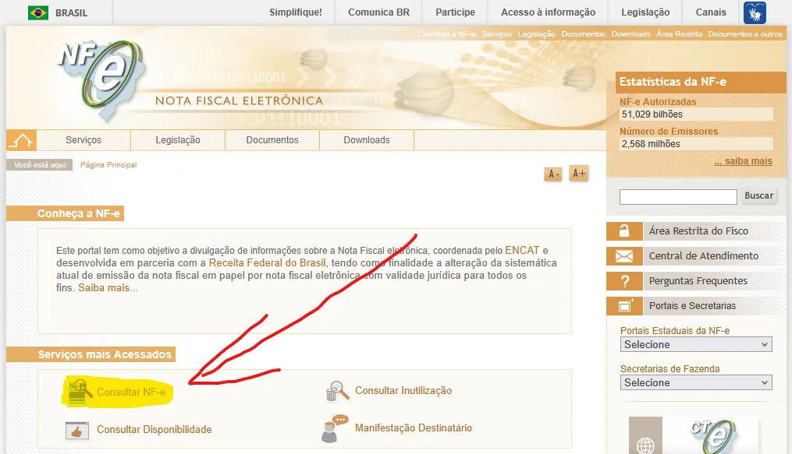
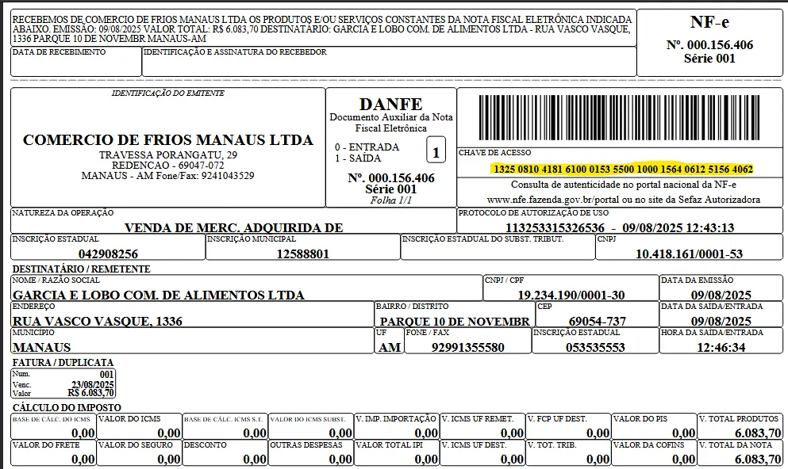
💡 Dica: A chave da nota fiscal geralmente está localizada ao lado direito superior. logo abaixo do código de barra (que pode ser bipado pelo leitor).
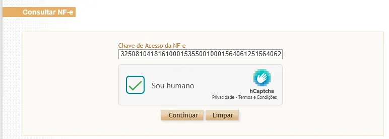
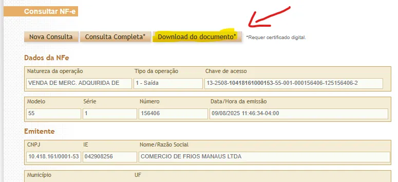
📌 Pronto, Agora você baixou o XML necessário para dar entrada na nota fiscal. (o arquivo geralmente fica salvo na pasta Downloads)
2. Acesse o compras (Moura)
- Compras
- compras
- Entrada de produto
- Cadastro de entrada de produto
- Importar NFE
- Clique nos 3 pontinhos
- Localize o XML e der um duplo clique
- Clique em carregar
- Se o produto estiver vinculado corretamente, preencha a quantidade que vem na caixa
- Depois de tudo vinculado e preenchido, clique em OK
- Em entrada: coloque a data que a mercadoria chegou na loja.
- Em depósito: coloque o depósito que pertence (padrão, produção, uso e consumo, cozinha, etc...)
- Em tipo de entrada: coloque o tipo de entrada (se é revenda, uso e consumo, transferência, comodato, etc...)
- Em modelo da nota: coloque o modelo que ela se refere, se é NF-e, CT-e, Energia Elétrica, outros, etc...
- Ajuste o CFOP e o CST se necessário.
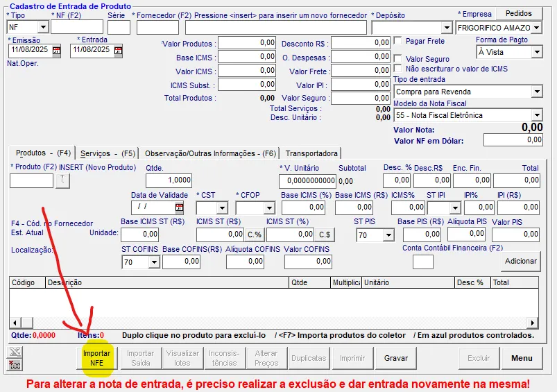
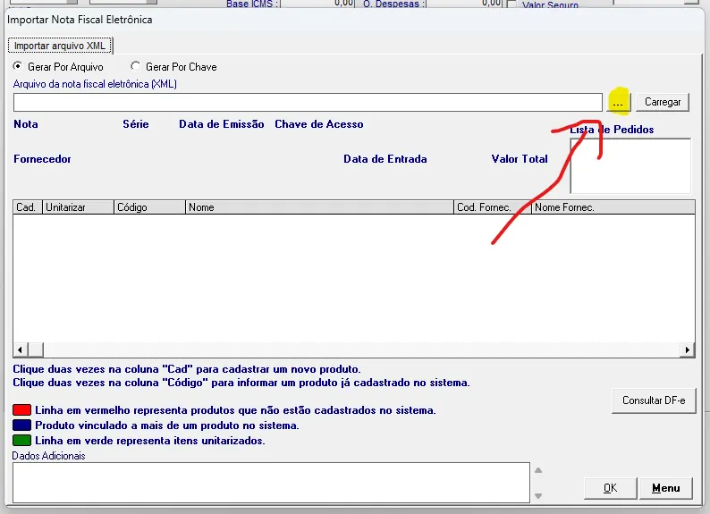
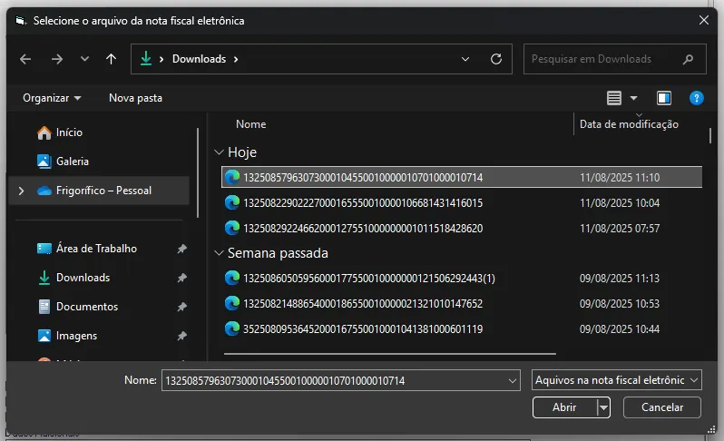
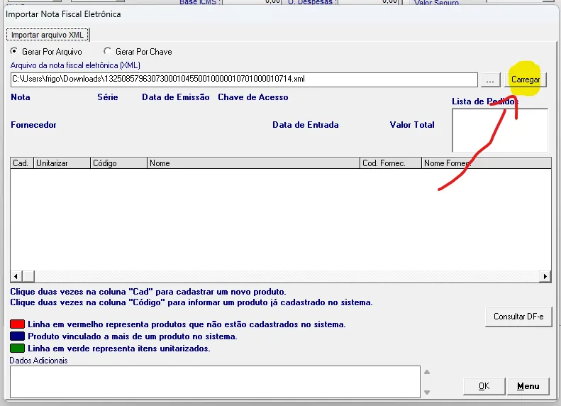
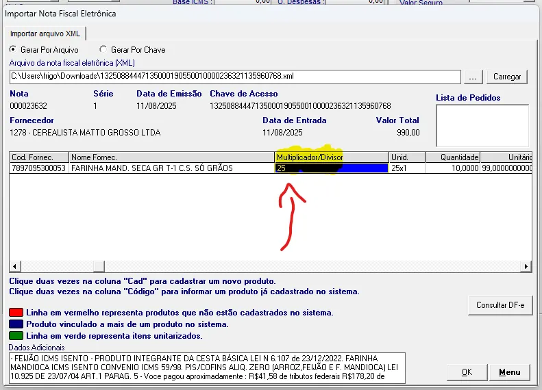
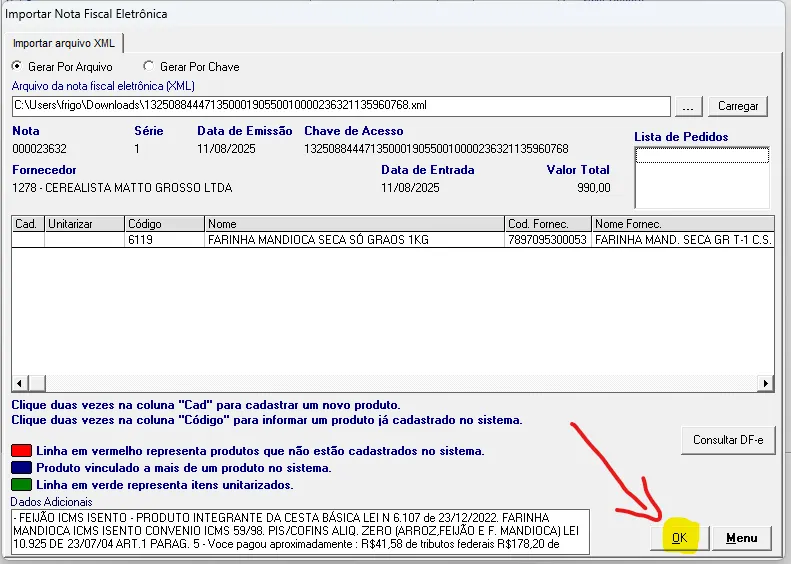
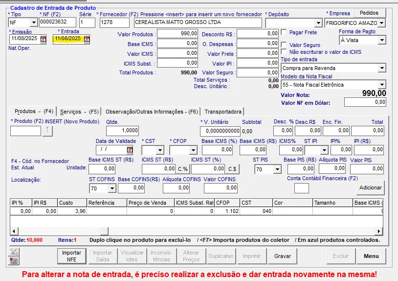
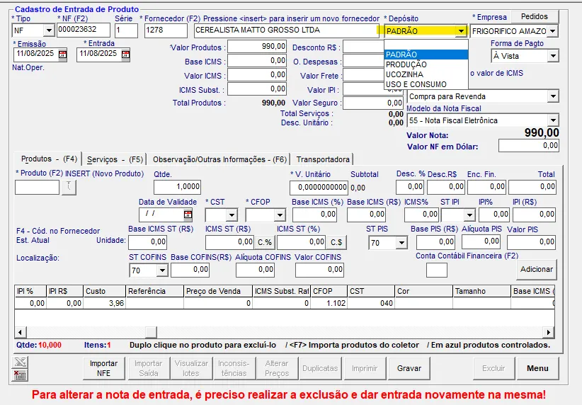
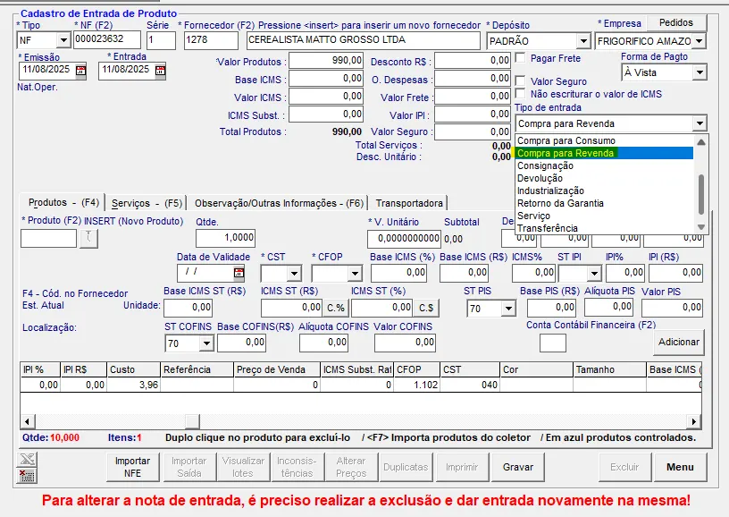
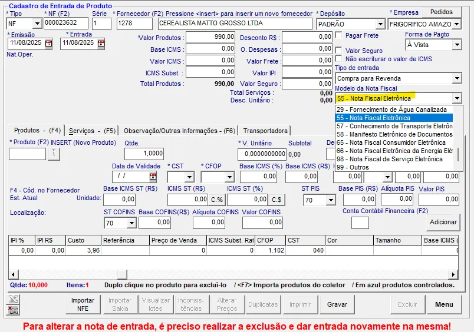
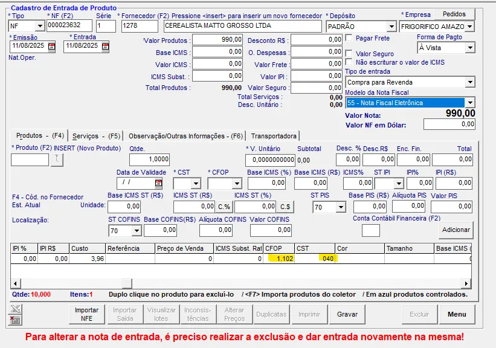
3. Lançamento do financeiro
- Preencha a conta corrente.
- Forma de pagamento
- Conta contábil
- Preencha o número do documento.
- Preencha a quantidade de parcelas, o vencimento inicial, e se caso há mais de uma parcela, preencha em Dias, o intervalo de dias entre as parcelas.
- Se tudo estiver conforme, clique em Gerar.
- Assine e anote o código gerado no boleto físico
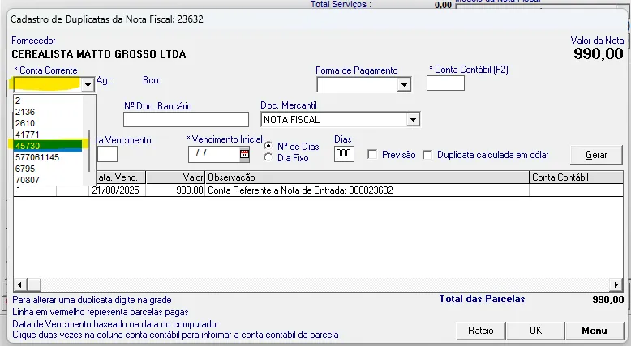
| Conta corrente | Descrição |
|---|---|
| 1 | Caixa interno |
| 2 | Transferência entre lojas |
| 45730 | Banco do Brasil |
Geralmente é dinheiro, mas se caso for depósito, você também pode colocar como depósito.
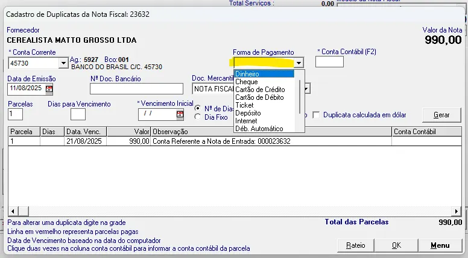
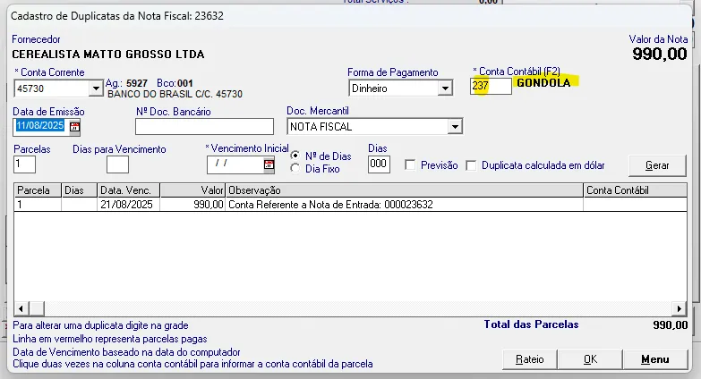
Conta contábil é o elemento que classifica os pagamentos, permitindo à contabilidade controlar e acompanhar o patrimônio e os resultados da empresa.
⚠️ Então bastante atenção a conta contábil, de preferência consulte o histórico do fornecedor e lance conforme o padrão de lançamentos.
Coloque o número do documento que você está lançando. Se é uma nota fiscal, coloque o número da nota que o boleto pertence, se for um CT-e, coloque o número do CT-e que pertence, se for apenas o boleto, coloque o número do boleto.
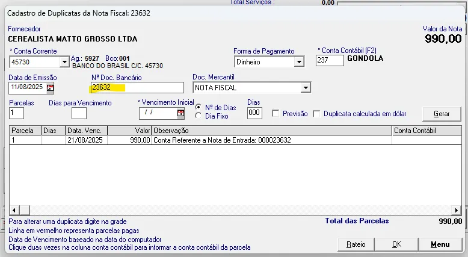
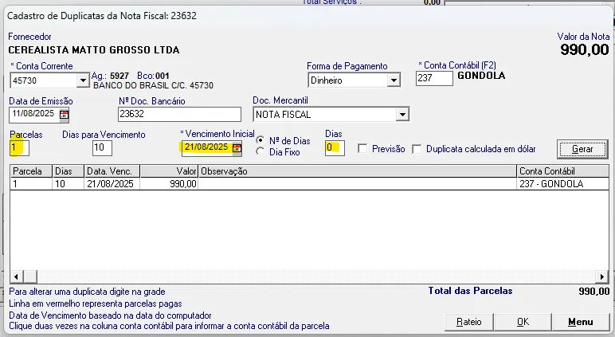
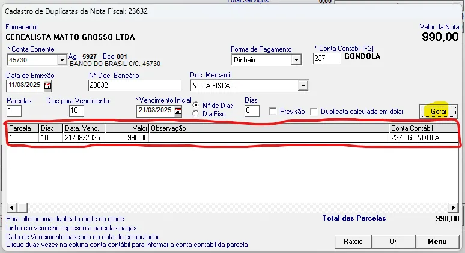
⚠️ Atenção: Depois de gerados, verifique a data de vencimento e o valor de cada parcela.
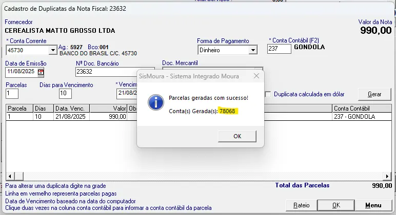
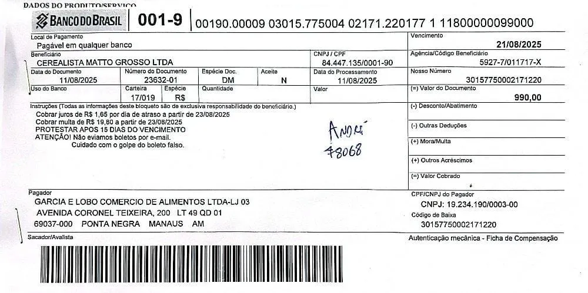
4. Precificação
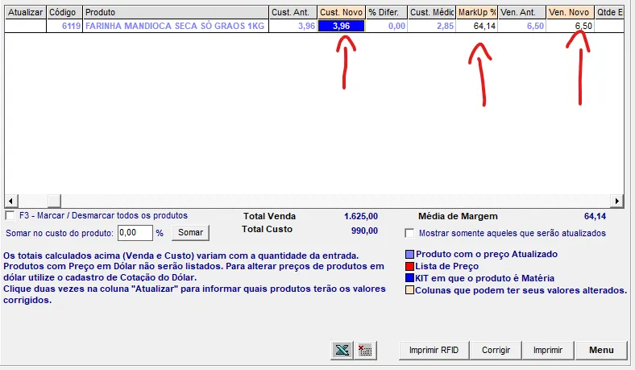
Os campos mais importantes são o custo novo, MarkUp e venda novo.
Significado dos principais campos (precificação)
| Descrição | Significado |
|---|---|
| Cust. Ant. | Custo Antigo; Antigo preço de custo. |
| Cust. Novo | Custo Novo; Novo preço de custo. |
| % Difer. | Percentual da diferença; Quantos porcento o custo subiu ou desceu. |
| MarkUp | MarkUp; A margem que utilizamos para precificar; A diferença do preço de custo para o preço de venda. |
| Ven. Ant. | Preço de venda anterior |
| Ven. Novo. | Novo preço de venda (definido por você agora) |
MarkUp dos nossos principais grupos
| Grupo | MarkUp |
|---|---|
| Gondola | 40% |
| Cerveja | 20% a 30% |
| FLV (Hortifruti) | 70% |
| Carnes | 40% |
Não esqueça de verificar com o gerente a maneira que está sendo aplicada esse Margem.
- Marcar todos e corrigir (F3)
Depois de verificar todos os preços de custo, MarkUp, e preço de venda. Marque todos e corrija.
Avisos e orientações importantes
- Se o preço de custo estiver igual ao anterior, e ainda não está na margem, tente entender o porquê. Mas geralmente, permaneça.
- Se caso o MarkUp esteja abaixo do adequado, comunique o responsável e altere.
- Necessário atualizar os preços no MouraWeb para atualizar os PDVs.
- Se for produtos pesados, é necessário jogar carga para balança.
- Se atente a unidades: se chegou a kilo, provavelmente será vendido a kilo. Caso contrário, faça a conversão corretamente!